Chapter 12: Chapter X. Geometrical Meaning of Differentiation¶
12.1 Chapter X. Geometrical Meaning of Differentiation¶
IT is useful to consider what geometrical meaning can be given to the differential coefficient.
In the first place, any function of  , such, for example, as
, such, for example, as  , or , or , can be plotted as a curve; and nowadays every schoolboy is familiar with the process of curve-plotting.
, or , or , can be plotted as a curve; and nowadays every schoolboy is familiar with the process of curve-plotting.
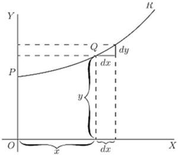
Let , in Fig. 7, be a portion of a curve plotted with respect to the axes of coordinates  and . Consider any point
and . Consider any point  on this curve, where the abscissa of the point is and its ordinate is
on this curve, where the abscissa of the point is and its ordinate is  . Now observe how changes when is varied. If is made to increase by a small increment
. Now observe how changes when is varied. If is made to increase by a small increment  , to the right, it will be observed that also (in this particular curve) increases by a small increment
, to the right, it will be observed that also (in this particular curve) increases by a small increment  (because this particular curve happens to be an ascending curve). Then the ratio of
(because this particular curve happens to be an ascending curve). Then the ratio of  to is a measure of the degree to which the curve is sloping up between the two points and
to is a measure of the degree to which the curve is sloping up between the two points and  . As a matter of fact, it can be seen on the figure that the curve between and has many different slopes, so that we cannot very well speak of the slope of the curve between and . If, however, and are so near each other that the small portion of the curve is practically straight, then it is true to say that the ratio
. As a matter of fact, it can be seen on the figure that the curve between and has many different slopes, so that we cannot very well speak of the slope of the curve between and . If, however, and are so near each other that the small portion of the curve is practically straight, then it is true to say that the ratio  is the slope of the curve along . The straight line produced on either side touches the curve along the portion only, and if this portion is indefinitely small, the straight line will touch the curve at practically one point only, and be therefore a tangent to the curve.
is the slope of the curve along . The straight line produced on either side touches the curve along the portion only, and if this portion is indefinitely small, the straight line will touch the curve at practically one point only, and be therefore a tangent to the curve.
This tangent to the curve has evidently the same slope as , so that  is the slope of the tangent to the curve at the point for which the value of is found.
is the slope of the tangent to the curve at the point for which the value of is found.
We have seen that the short expression "the slope of a curve" has no precise meaning, because a curve has so many slopes-in fact, every small portion of a curve has a different slope. "The slope of a curve at a point" is, however, a perfectly defined thing; it is the slope of a very small portion of the curve situated just at that point; and we have seen that this is the same as "the slope of the tangent to the curve at that point."
Observe that is a short step to the right, and the corresponding short step upwards. These steps must be considered as short as possible—in fact indefinitely short,—though in diagrams we have to represent them by bits that are not infinitesimally small, otherwise they could not be seen.
We shall hereafter make considerable use of this circumstance that represents the slope of the curve at any point.
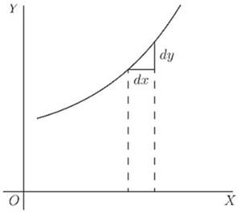
If a curve is sloping up at at a particular point, as in Fig. 8, and will be equal, and the value of .
If the curve slopes up steeper than (Fig. 9), will be greater than 1.
If the curve slopes up very gently, as in Fig. 10, will be a fraction smaller than 1.
For a horizontal line, or a horizontal place in a curve, , and therefore .
If a curve slopes downward, as in Fig. 11, will be a step down, and must therefore be reckoned of negative value; hence will have negative sign also.
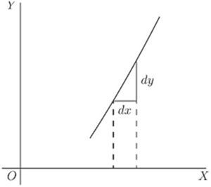
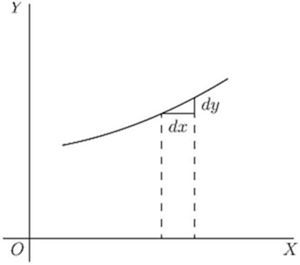
If the "curve" happens to be a straight line, like that in Fig. 12, the value of will be the same at all points along it. In other words its slope is constant.
If a curve is one that turns more upwards as it goes along to the right, the values of will become greater and greater with the increasing steepness, as in Fig. 13.
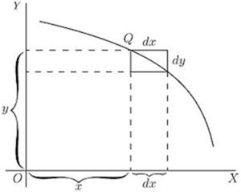
If a curve is one that gets flatter and flatter as it goes along, the values of will become smaller and smaller as the flatter part is reached, as in Fig. 14.
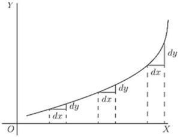
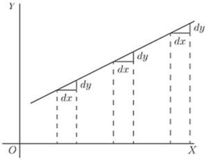
If a curve first descends, and then goes up again, as in Fig. 15, presenting a concavity upwards, then clearly will first be negative, with diminishing values as the curve flattens, then will be zero at the point where the bottom of the trough of the curve is reached; and from this point onward will have positive values that go on increasing. In such a case is said to pass by a minimum.
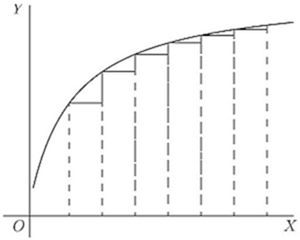
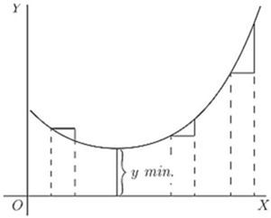
The minimum value of is not necessarily the smallest value of , it is that value of corresponding to the bottom of the trough; for instance, in Fig. 28 (p. 99), the value of corresponding to the bottom of the trough is 1, while takes elsewhere values which are smaller than this. The characteristic of a minimum is that must increase on either side of it.
N.B.—For the particular value of that makes a minimum, the value of .
If a curve first ascends and then descends, the values of will be positive at first; then zero, as the summit is reached; then negative, as the curve slopes downwards, as in Fig. 16. In this case is said to pass by a maximum, but the maximum value of is not necessarily the greatest value of . In Fig. 28, the maximum of is , but this is by no means the greatest value can have at some other point of the curve.
N.B.—For the particular value of that makes a maximum, the value of .
If a curve has the peculiar form of Fig. 17, the values of will always be positive; but there will be one particular place where the slope is least steep, where the value of will be a minimum; that is, less than it is at any other part of the curve.
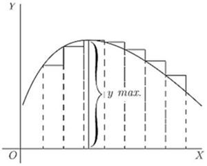
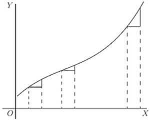
If a curve has the form of Fig. 18, the value of will be negative in the upper part, and positive in the lower part; while at the nose of the curve where it becomes actually perpendicular, the value of will be infinitely great.
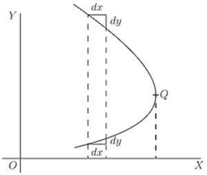
Now that we understand that measures the steepness of a curve at any point, let us turn to some of the equations which we have already learned how to differentiate.
(1) As the simplest case take this:
It is plotted out in Fig. 19, using equal scales for and . If we put  , then the corresponding ordinate will be ; that is to say, the "curve" crosses the -axis at the height
, then the corresponding ordinate will be ; that is to say, the "curve" crosses the -axis at the height  . From here it ascends at ; for whatever values we give to to the right, we have an equal to ascend. The line has a gradient of 1 in 1.
. From here it ascends at ; for whatever values we give to to the right, we have an equal to ascend. The line has a gradient of 1 in 1.
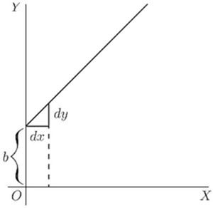
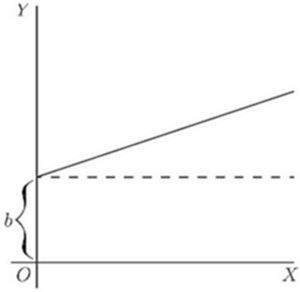
Now differentiate , by the rules we have already learned (pp. 21 and 25 ante), and we get .
The slope of the line is such that for every little step to the right, we go an equal little step upward. And this slope is constant-always the same slope.
(2) Take another case:
We know that this curve, like the preceding one, will start from a height on the -axis. But before we draw the curve, let us find its slope by differentiating; which gives . The slope will be constant, at an angle, the tangent of which is here called  . Let us assign to some numerical value—say . Then we must give it such a slope that it ascends 1 in 3; or will be 3 times as great as ; as magnified in Fig. 21. So, draw the line in Fig. 20 at this slope.
. Let us assign to some numerical value—say . Then we must give it such a slope that it ascends 1 in 3; or will be 3 times as great as ; as magnified in Fig. 21. So, draw the line in Fig. 20 at this slope.
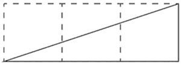
(3) Now for a slightly harder case.
Let
Again the curve will start on the -axis at a height above the origin.
Now differentiate. [If you have forgotten, turn back to p. 25; or, rather, don't turn back, but think out the differentiation.]
This shows that the steepness will not be constant: it increases as increases. At the starting point  , where , the curve (Fig. 22) has no steepness—that is, it is level. On the left of the origin, where has negative values, will also have negative values, or will descend from left to right, as in the Figure.
, where , the curve (Fig. 22) has no steepness—that is, it is level. On the left of the origin, where has negative values, will also have negative values, or will descend from left to right, as in the Figure.
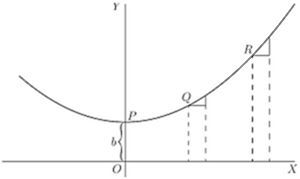
Let us illustrate this by working out a particular instance. Taking the equation and differentiating it, we get
Now assign a few successive values, say from 0 to 5, to ; and calculate the corresponding values of by the first equation; and of from the second equation. Tabulating results, we have:
|
0 | 1 | 2 | 3 | 4 | 5 |
|---|---|---|---|---|---|---|
|
3 | 4 |  |
7 | ||
|
0 | 1 |  |
2 |
Then plot them out in two curves, Figs. 23 and 24, in Fig. 23 plotting the values of against those of and in Fig. 24 those of against those of . For any assigned value of , the height of the ordinate in the second curve is proportional to the slope of the first curve.
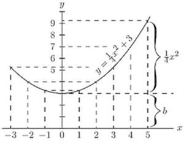
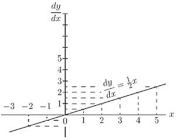
If a curve comes to a sudden cusp, as in Fig. 25, the slope at that point suddenly changes from a slope upward to a slope downward. In that case will clearly undergo an abrupt change from a positive to a negative value.
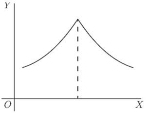
The following examples show further applications of the principles just explained.
(4) Find the slope of the tangent to the curve at the point where  . Find the angle which this tangent makes with the curve .
. Find the angle which this tangent makes with the curve .
The slope of the tangent is the slope of the curve at the point where they touch one another (see p. 76); that is, it is the  of the curve for that point. Here and for , which is the slope of the tangent and of the curve at that point. The tangent, being a straight line, has for equation , and its slope is , hence . Also if ; and as the tangent passes by this point, the coordinates of the point must satisfy the equation of the tangent, namely so that and ; the equation of the tangent is therefore .
of the curve for that point. Here and for , which is the slope of the tangent and of the curve at that point. The tangent, being a straight line, has for equation , and its slope is , hence . Also if ; and as the tangent passes by this point, the coordinates of the point must satisfy the equation of the tangent, namely so that and ; the equation of the tangent is therefore .
Now, when two curves meet, the intersection being a point common to both curves, its coordinates must satisfy the equation of each one of the two curves; that is, it must be a solution of the system of simultaneous equations formed by coupling together the equations of the curves. Here the curves meet one another at points given by the solution of that is,
This equation has for its solutions and . The slope of the curve at any point is
For the point where , this slope is zero; the curve is horizontal. For the point where hence the curve at that point slopes downwards to the right at such an angle  with the horizontal that ; that is, at to the horizontal.
with the horizontal that ; that is, at to the horizontal.
The slope of the straight line is ; that is, it slopes downwards to the right and makes with the horizontal an angle such that ; that is, an angle of . It follows that at the first point the curve cuts the straight line at an angle of , while at the second it cuts it at an angle of .
(5) A straight line is to be drawn, through a point whose coordinates are , as tangent to the curve . Find the coordinates of the point of contact.
The slope of the tangent must be the same as the of the curve; that is, .
The equation of the straight line is , and as it is satisfied for the values , then ; also, its .
The and the of the point of contact must also satisfy both the equation of the tangent and the equation of the curve.
We have then four equations in .
Equations (i) and (ii) give .
Replacing and by their value in this, we get which simplifies to , the solutions of which are:  and
and  . Replacing in (i), we get
. Replacing in (i), we get  and
and  respectively; the two points of contact are then , , and , .
respectively; the two points of contact are then , , and , .
Note.—In all exercises dealing with curves, students will find it extremely instructive to verify the deductions obtained by actually plotting the curves.
Exercises VIII. (See page 256 for Answers.)
(1) Plot the curve , using a scale of millimetres. Measure at points corresponding to different values of , the angle of its slope.
Find, by differentiating the equation, the expression for slope; and see, from a Table of Natural Tangents, whether this agrees with the measured angle.
(2) Find what will be the slope of the curve
at the particular point that has as abscissa  .
.
(3) If , show that at the particular point of the curve where will have the value .
(4) Find the of the equation ; and calculate the numerical values of for the points corresponding to ,  , .
, .
(5) In the curve to which the equation is , find the values of at those points where the slope  .
.
(6) Find the slope, at any point, of the curve whose equation is ; and give the numerical value of the slope at the place where , and at that where .
(7) The equation of a tangent to the curve , being of the form , where  and
and  are constants, find the value of and if the point where the tangent touches the curve has for abscissa.
are constants, find the value of and if the point where the tangent touches the curve has for abscissa.
(8) At what angle do the two curves cut one another?
(9) Tangents to the curve are drawn at points for which and  . Find the coordinates of the point of intersection of the tangents and their mutual inclination.
. Find the coordinates of the point of intersection of the tangents and their mutual inclination.
(10) A straight line touches a curve at one point. What are the coordinates of the point of contact, and what is the value of ?